反问题设计与辨识¶
TensorMesh 是端到端可微的：Mesh → Assembler → SparseMatrix → Condenser → Solve 的每一步都是一个 nn.Module 或自定义的 autograd.Function，而线性求解携带了解析的 伴随反向传播（继承自 torch-sla）。因此，在 FEM 解上计算的损失可以反向传播到上游的 任意 量——每个节点上的系数、逐单元的设计密度、源项——而无需手写哪怕一个灵敏度方程。可微性 一章介绍了其原理；本示例库将其落地为 examples/inverse_design/ 中三个可运行的脚本。
它们涵盖了"穿过 PDE 求梯度"的两种类型：
辨识 —— 从观测中恢复一个未知场（
coefficient_identification.py）。设计 —— 在约束下选择一个使目标最优的场（
thermal_topology.py与compliance_topology.py）。
备注
这三个示例的梯度全部来自 autograd。它们都没有手写伴随——这正是关键所在。经典的 SIMP 灵敏度 \(\partial C/\partial \rho_e = -p\,\rho_e^{p-1}(E_{\max}-E_{\min})\, \mathbf{u}_e^{T}\mathbf{K}_0^e\mathbf{u}_e\) 会自动地从 compliance.backward() 中得出。
系数场辨识 —— coefficient_identification.py¶
在下式中恢复一个未知的、随空间变化的扩散系数 \(\kappa(x)\)：
仅从单个观测解 \(u_{\rm obs}\) 出发。前向映射是"给定 \(\kappa\) 后求解 FEM"；损失是到观测的 L² 距离；由 Adam 进行下降。我们将 \(\kappa = 1 + \tanh\theta\) 参数化，使得 \(\kappa\in(0,2)\) 始终严格为正（矩阵在每次迭代中都是 SPD 的），同时 \(\theta\) 不受约束。
class WeightedLaplace(ElementAssembler):
def forward(self, gradu, gradv, kappa):
return kappa * (gradu @ gradv)
def fem_solve(kappa):
K = WeightedLaplace.from_mesh(mesh)(point_data={"kappa": kappa}).double()
b = Source.from_mesh(mesh)(point_data={"f": f_vals}).double()
K_, b_ = cond(K, b)
return cond.recover(K_.solve(b_))
theta = torch.zeros(mesh.n_points, requires_grad=True) # kappa = 1 + tanh(theta)
optim = torch.optim.Adam([theta], lr=3e-2)
for step in range(5000):
optim.zero_grad()
u = fem_solve(1.0 + torch.tanh(theta))
loss = ((u - u_obs) ** 2).sum()
loss.backward() # adjoint solve gives dLoss/dtheta
optim.step()
在 5000 步内，数据损失下降了七个数量级以上，恢复出的场几乎处处与四瓣状的真值相吻合：
{kind=link}
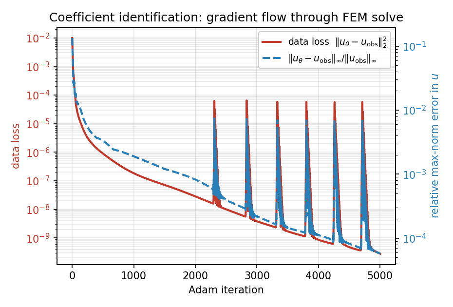
图 53 优化历史：数据损失 \(\|u_\theta - u_{\rm obs}\|_2^2\) 降至 \(\sim 3\times10^{-10}\)（周期性的尖峰是 Adam 在病态的谷底过冲所致，几步之内即可恢复）；\(u\) 的相对最大范数误差达到 \(\sim 6\times10^{-5}\)。¶
{kind=link}
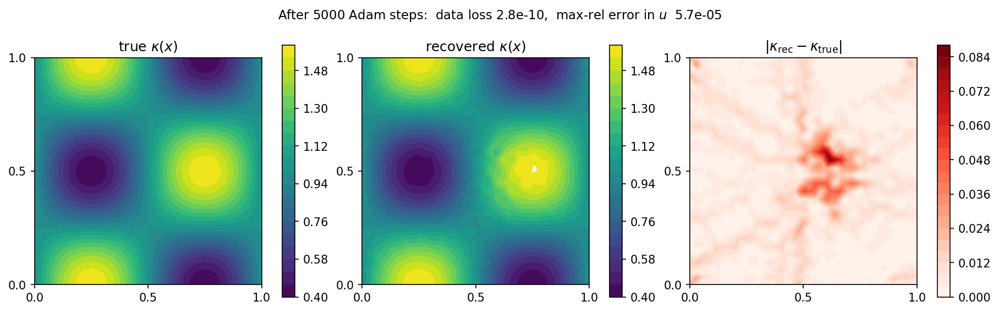
图 54 真值（左）、恢复值（中）以及绝对误差（右）的系数场。唯一可见的残差是中心处一个淡淡的斑点，那里常值源使 \(\nabla u\) 消失：由于该处没有通量，数据几乎无法约束 \(\kappa\)，因此该区域恢复得最慢。对 \(\theta\) 施加一个光滑性惩罚即可消除它。¶
热柔顺度拓扑优化 —— thermal_topology.py¶
在单位正方形上分布固定数量的导热材料，使其尽可能高效地将热量从中心源排向冷边界——在硬体积上限约束下最小化热柔顺度 \(J = \mathbf{b}^{T}\mathbf{u}\)：
其中采用 SIMP 导热率定律 \(\kappa(\rho)=\kappa_{\min}+(1-\kappa_{\min})\,\rho^{p}\) 以及逐单元密度 \(\rho\)。柔顺度梯度来自自动微分；密度更新使用内置的 OCOptimizer（带体积二分步的最优准则法）。
from tensormesh.optimizer import OCOptimizer
rho = torch.full((n_elem,), V, requires_grad=True)
optim = OCOptimizer(rho, vf=V, move_limit=0.15)
def fem_solve(rho):
kappa = kmin + (1.0 - kmin) * rho ** p_simp # SIMP, per element
K = SIMPLaplace.from_mesh(mesh)(element_data={"kappa": kappa}).double()
b = Source.from_mesh(mesh)(point_data={"f": f_field}).double()
K_, b_ = cond(K, b)
return cond.recover(K_.solve(b_)), b
for step in range(60):
optim.zero_grad()
u, b = fem_solve(rho)
compliance = (b * u).sum() # J = b^T u
compliance.backward() # autograd populates rho.grad
optim.step() # OC update + volume bisection
最优布局是一个"热十字"，将炽热的中心与四条冷的边中点相连；柔顺度下降了约 \(8.6\times\)（\(5.9\times10^{-3} \to 6.9\times10^{-4}\)），同时体积分数被精确地保持在 \(0.4\)：
{kind=link}
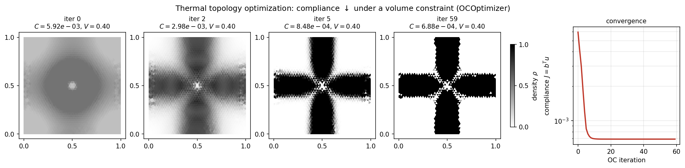
图 55 60 个 OC 步内的密度演化（第 0 次迭代是均匀的 \(\rho = V\) 初始值）以及柔顺度历史。十字结构在第 5 次迭代时已经显现，并在结尾处锐化为接近 0/1 的设计。¶
这是下面结构问题的标量/热学对应版本：相同的"自动微分灵敏度 + 密度更新"模式，不同的物理与不同的优化器。
结构柔顺度拓扑优化 —— compliance_topology.py¶
经典的二维悬臂梁：在体积约束下最小化结构柔顺度，采用 SIMP 密度插值、带密度滤波的 MMA（移动渐近线法）更新。它被配置为与一个 JAX-FEM 参考问题相匹配，以便进行正面对比。
{kind=link}
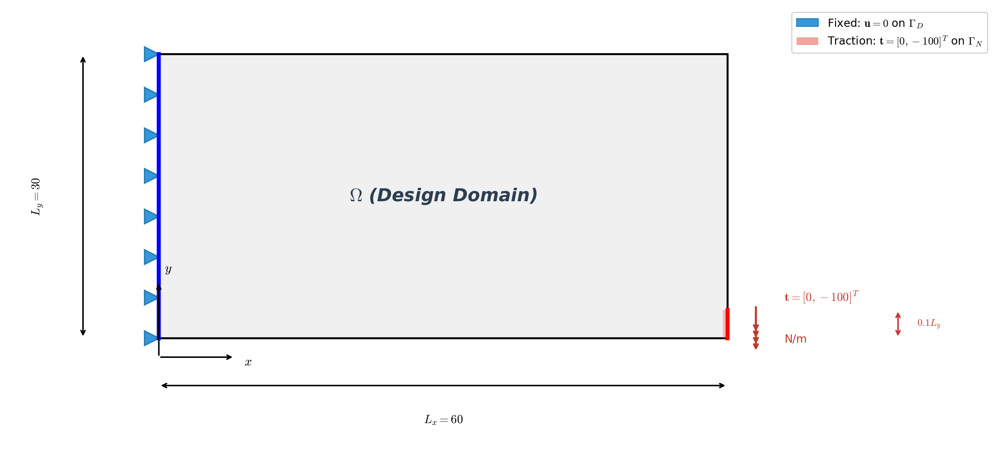
设置。 区域为 \(60\times30\)，剖分为 \(60\times30\) 个 QUAD4 单元（1891 个节点，1800 个单元）；左边固支（在 \(x=0\) 处 \(\mathbf{u}=\mathbf{0}\)）；右下角施加向下的面力 \(\mathbf{t}=[0,-100]^{T}\)；平面应力材料，\(E_{\max}=70\,000\)、\(E_{\min}=70\)、\(\nu=0.3\)，SIMP 惩罚系数 \(p=3\)，目标体积分数 \(\bar v = 0.5\)。
平面应力刚度的被积函数直接写在装配器的 forward 中；rho 通过 element_data 逐单元传入，而柔顺度梯度同样只是 compliance.backward()：
class SIMPStiffnessAssembler(ElementAssembler):
def __post_init__(self, E_max=70e3, E_min=70.0, nu=0.3, penal=3.0):
self.E_max, self.E_min, self.nu, self.penal = E_max, E_min, nu, penal
def forward(self, gradu, gradv, rho):
E = self.E_min + rho ** self.penal * (self.E_max - self.E_min)
D11, D12 = E / (1 - self.nu**2), self.nu * E / (1 - self.nu**2)
D33 = E / (2 * (1 + self.nu))
gux, guy = gradu[0], gradu[1]
gvx, gvy = gradv[0], gradv[1]
K00 = D11 * gux * gvx + D33 * guy * gvy
K01 = D12 * gux * gvy + D33 * guy * gvx
K10 = D12 * guy * gvx + D33 * gux * gvy
K11 = D11 * guy * gvy + D33 * gux * gvx
return torch.stack([torch.stack([K00, K01]), torch.stack([K10, K11])])
for epoch in range(max_iters):
rho_var = rho.clone().requires_grad_(True)
K = K_asm(mesh.points, element_data={"rho": rho_var})
K_, F_ = condenser(K, F)
u = condenser.recover(K_.solve(F_, backend="scipy"))
compliance = u @ F
compliance.backward() # dC/drho via autograd
optimizer.step(dc=rho_var.grad, dv=torch.ones_like(rho) / n_elem)
优化器收敛到标准的悬臂桁架，并紧密跟踪 JAX-FEM 参考结果：
迭代 |
JAX-FEM |
TensorMesh |
|---|---|---|
0 |
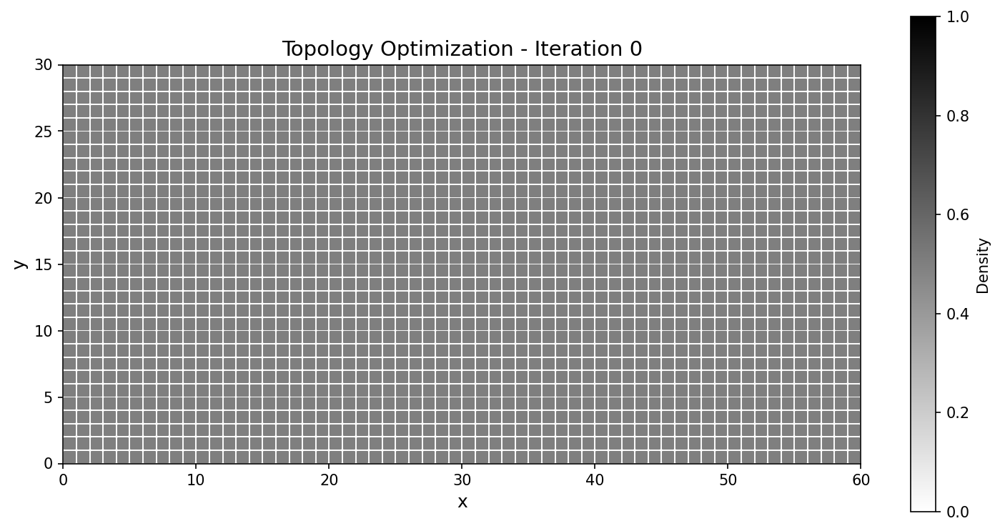 |
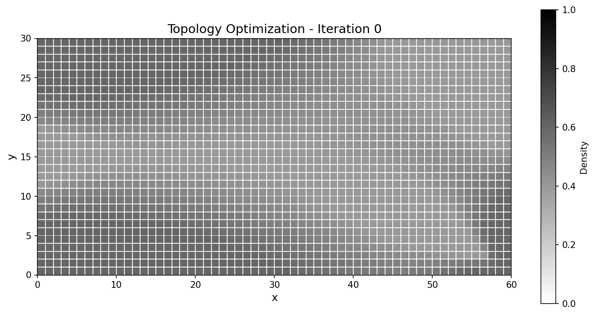 |
10 |
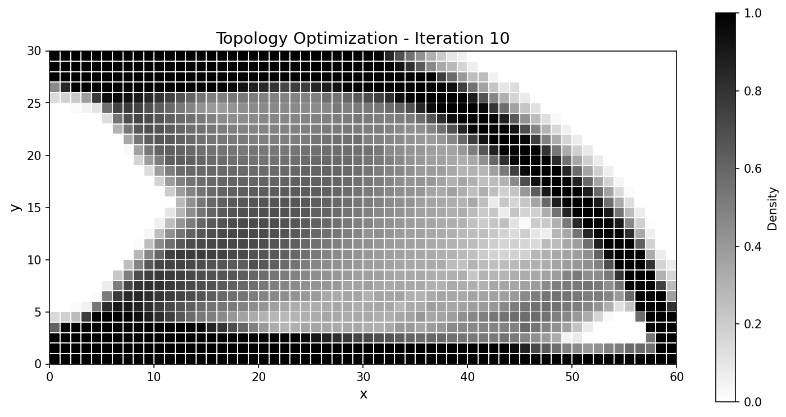 |
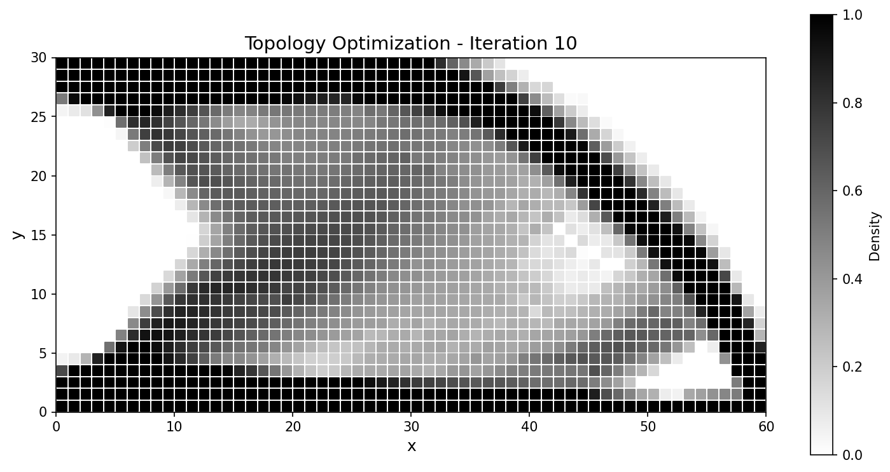 |
25 |
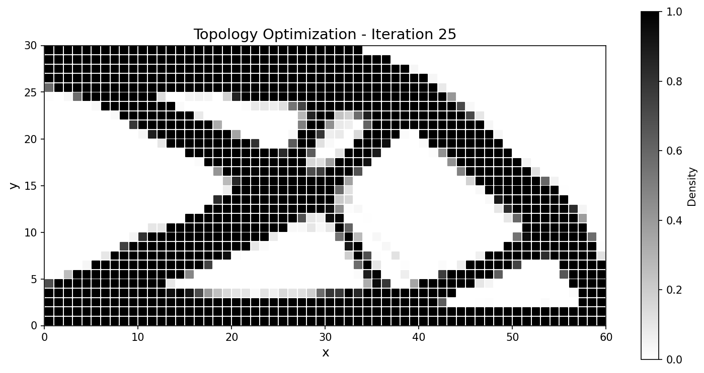 |
|
50 |
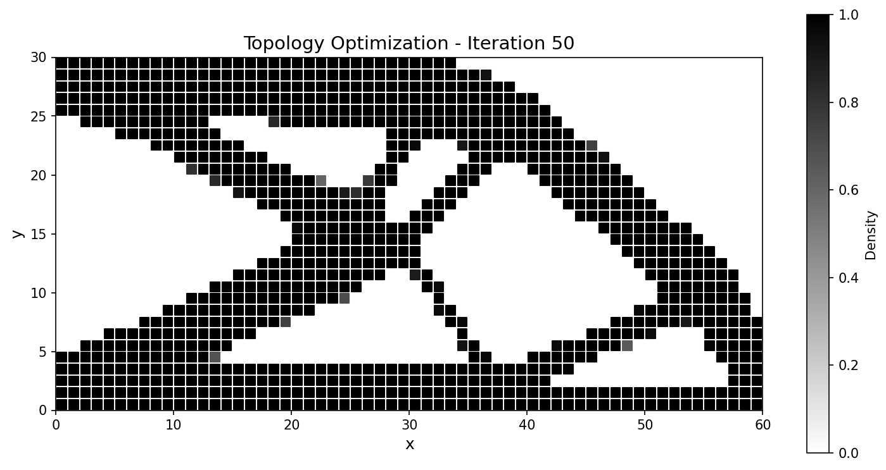 |
{kind=link}
{kind=link}
{kind=link}
{kind=link}
{kind=link}
{kind=link}
{kind=link}
{kind=link}
{kind=link}
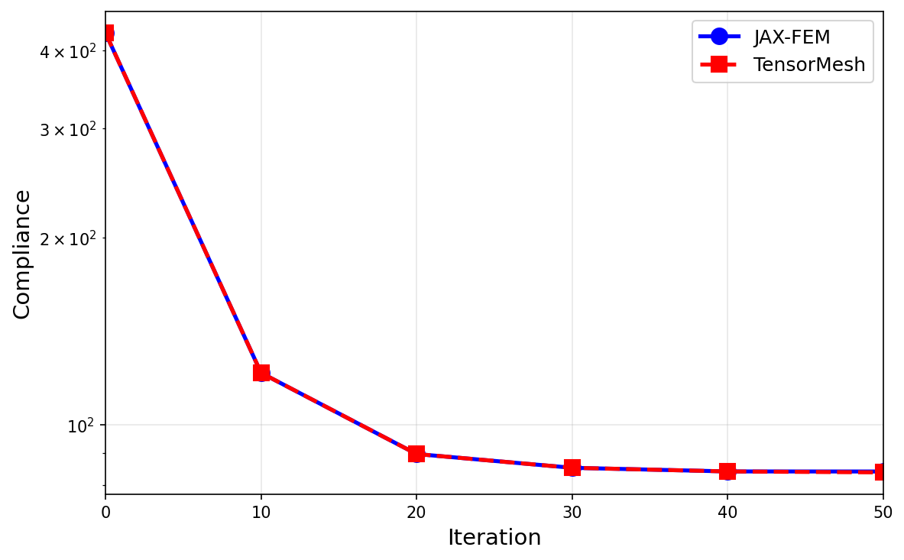
图 56 整个运行过程中柔顺度历史一致；最终设计的吻合度达到百分之几以内。¶
指标 |
JAX-FEM |
TensorMesh |
说明 |
|---|---|---|---|
最终柔顺度 |
84.03 |
83.75 |
相差 0.33 % |
体积分数 |
0.500 |
0.500 |
一致 |
总耗时 |
31.13 s |
8.35 s |
快 3.7× |
备注
本示例依赖本地的 mma_optimizer.py（一个小型 MMA 实现），并依赖 meshio / tqdm 用于 VTK 导出和进度条。上面更轻量的 thermal_topology.py 使用内置的 OCOptimizer，没有额外依赖。
运行示例¶
cd examples/inverse_design
python coefficient_identification.py # ~1 min CPU -> coefficient_id_*.png
python thermal_topology.py # a few seconds -> thermal_topology.png
python compliance_topology.py # cantilever; writes output/
每个脚本都接受 --device cuda 以及若干控制问题规模的参数（--n-iter、--chara-length、--vf）；传入 -h 可查看完整列表。